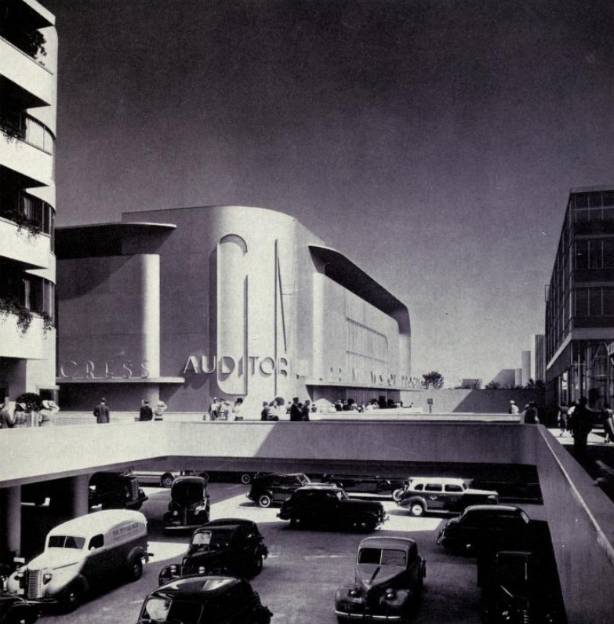
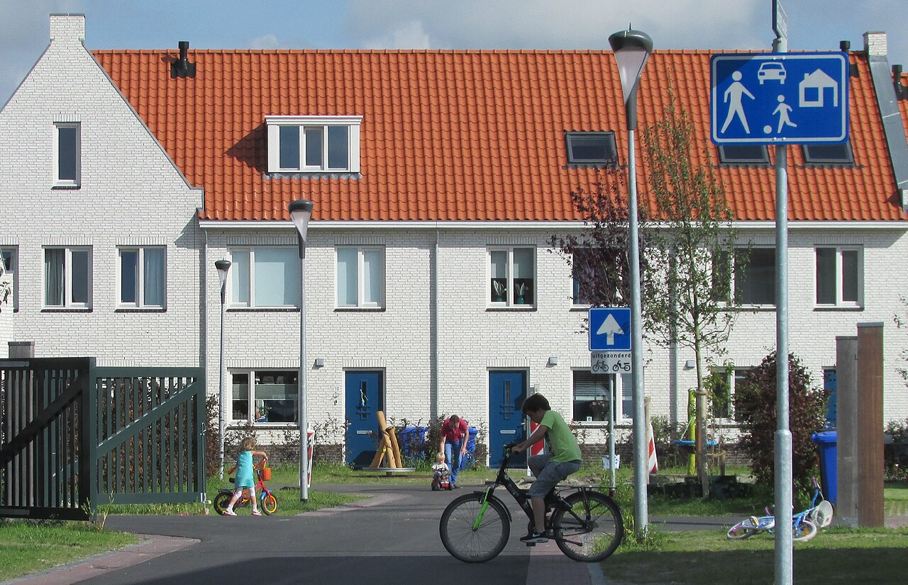
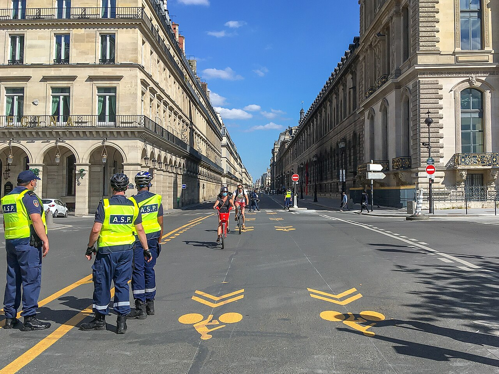

Part IV · Policy levers · Module 12
Street design and passive control
On 24 May 2009 New York City closed Broadway to cars through Times Square. The transport department did it as a trial, with paint, planters and chairs. Afterwards 80% fewer pedestrians walked in the roadway, and pedestrian injuries in the area fell by 35%. Within a year the mayor made the change permanent. A sign asks drivers to behave; the shape of a street makes them. This module is about that second kind of control, and about the manuals, laws and budgets that decide which shape a street gets. It starts from real streets, reads national design manuals as objectives written in concrete, and ends with what a council can change within a year, and who loses when it does.
- The question
- What is this street for, and what can the council change about it, how fast? Every street already answers the first question, often by default.
- What matters
- Drivers choose their speed mostly from what the street looks like, not from the sign. Speed decides most of the harm a street does: crashes, noise and the barrier it puts between neighbors. Width decides how many people the street serves and how much land it takes. Every national design manual encodes an answer to "what is this street for?", so choosing a manual is choosing an objective.
- Numbers to question
- The design speed of a street, which is often higher than its speed limit. The traffic volume a cross-section was dimensioned for. The claim that traffic removed from one street reappears in full on the next. The land value of curb space: one parking space can occupy land worth €1,500 a year.
- Levers
- Within weeks: speed limits (where the law lets the city set them), signal timing, trial closures. Within a year: paint, posts, planters, modal filters, parking and loading rules. Within a few years: curbs, trees, drainage, full rebuilds. Who owns the road, and which manual applies to it, decides which levers the council holds.
- Ask your designers
- Which manual did you follow, and for what speed and which vehicle did it design? Who loses: bus passengers, ambulances, disabled people, residents of neighboring roads? What did monitoring of similar schemes find on those roads? Can we try it first, cheaply, and measure?
- Read a street as a choice of objective: the speed it produces, the people it serves and the land it takes.
- Explain the difference between design speed and target speed, and why geometry controls speed more reliably than signs.
- Compare five design traditions (the US Green Book and NACTO guide, the Dutch CROW manuals, the German RASt 06, the British Manual for Streets) by origin, objective, strengths and documented failures.
- Choose among traffic-calming and filtering measures, and state their side effects.
- Plan what a council can change within a year, and what takes longer, under its national legal framework.
- Identify who loses from calming and filtering (bus passengers, emergency services, some disabled people, residents of boundary roads) and design for them.
1. A street is a decision


At the 1939 New York World's Fair, the General Motors pavilion showed visitors a model of America in 1960. It was designed by Norman Bel Geddes and called Futurama. Part of the pavilion was built as a full-size street intersection of that future city. Cars had the ground to themselves. People walked on broad raised sidewalks one floor above. The idea was to end the conflict between cars and people by separating them in space, and to give the ground to traffic.
Thirty years later, planners in the Netherlands tried the opposite. In 1965 the Dutch planner Niek de Boer coined the word woonerf, "living yard". His own version still kept cars and people apart. In 1969 one of his former students, Joost Váhl, built the mixed version in Delft: a street with no curb, where cars, children and pedestrians share one surface, with trees, play space and parking in marked bays. Drivers enter as guests and move at walking pace. The woonerf received legal status in Dutch traffic law in 1976.
Both are answers to one question: what is this street for? Futurama gives the street to movement and lifts people out of its way. The woonerf gives the street to the people who live on it, and slows movement until it fits. Most streets lie somewhere between the two. Every national design manual says where.
Sources: I. Nio, "Communal versus Private", DASH (TU Delft), on de Boer and Váhl; N. Bel Geddes, Magic Motorways (1940).
Self-explaining roads
Drivers choose speed mostly from what they see: road width, the distance to buildings and trees, sight lines, surface, markings and the presence of other people. Signs have a much weaker effect. In 1995 the Dutch researchers Theeuwes and Godthelp called a road self-explaining when its appearance tells users what kind of road it is and how to behave on it. On such a road, the speed people choose by instinct matches the speed the road is meant for. The idea underlies the predictability principle of the Dutch Sustainable Safety vision (Module 11).
Design speed and target speed
Highway engineering dimensions a road for a design speed: the speed for which its curves, lane widths and sight distances are chosen. The idea is protective. If a driver goes as fast as the road allows, the geometry should still keep them safe. On rural highways that is a sensible rule.
The trouble starts when the same rule is applied to city streets. To be safe, the design speed is set equal to or above the speed limit. Wide lanes, generous curve radii and clear roadsides then make high speed feel safe, so drivers go faster than the limit. The street is "forgiving" to the motorist and unforgiving to everyone else. The response, from the Dutch woonerf to the US NACTO guide, is to design for a target speed: the speed the street should have, not the speed drivers might attempt.
What the objective says
A study that scores a street only by vehicle travel time counts every slower car as a cost. The welfare objective \(W\) of Module 1 counts more. The same calming measure can raise welfare through Term C (fewer crashes, less noise, less severance), Term A (new walking and cycling options, and a safer feeling for those who walk and cycle), Term B (more active travel) and Term D (space released for other uses). It also costs drivers time, which is in Term A too. Design is the instrument. The objective decides whether a given design is a good one.
2. Design manuals: objectives made physical A C
Few streets are designed from first principles. Engineers follow a manual, usually a national one. Each manual was written by a particular group of people, at a particular time, to solve a particular problem. It then carries that problem's objective into thousands of streets, long after the people who wrote it have moved on. This section reads five manuals from four countries in that way: who wrote them, what they put first, what they achieved, and where they failed.
United States: from the Green Book to NACTO
American highway engineers work from A Policy on Geometric Design of Highways and Streets, known as the Green Book. It is published by AASHTO, the association of state highway and transportation officials. Its first edition in 1984 merged two earlier policies from 1954 and 1957. Its central tool is the design speed (section 1). The method was built for highways, and there it works: generous curves, wide lanes and clear roadsides protect drivers who make mistakes at speed. The seventh edition appeared in 2018. An eighth is in preparation, with more room for walking, cycling and the surrounding context.
The failure appears where highway practice meets city streets. Many urban arterials are state highways, designed to state standards for a design speed above their limit. Federal funding long rewarded projects that kept vehicles moving at a good "level of service" (Module 8). The result is the wide, fast urban arterial, comfortable to drive and dangerous to cross.
In 2013 the National Association of City Transportation Officials (NACTO), a group of big-city transport departments, published the Urban Street Design Guide as an urban alternative. It treats streets as public spaces. It asks designers to choose a target speed first and to bring the design speed down to it. It documents narrow lanes, protected bike lanes, curb extensions, parklets and "interim" designs built with paint and posts. US cities have been inventive with such quick-build projects and with public engagement. NACTO's weakness is its status. It is guidance, not a standard, and on state highways and federally funded projects the Green Book still governs. Complete Streets policies, adopted by many states and cities, require all users to be considered, with mixed results in practice.
Netherlands: function first

The woonerf proved expensive to build and maintain, and it was hard to apply to whole neighborhoods. From the 1980s Dutch practice shifted to cheaper 30 km/h zones with entry gateways, plateaus and raised junctions. In 1992 the road safety institute SWOV published the Sustainable Safety vision (Module 11). It gives every road one function: a through road, a distributor road or an access road, each with its own speed and layout. Low-speed access roads became the default in built-up areas.
The national knowledge platform CROW turns this vision into the manuals that municipalities use: the ASVV recommendations for traffic provisions in built-up areas, and the Design Manual for Bicycle Traffic (Module 6). Both are paid publications. The current traffic rules still define the legal woonerf, now called an erf:
"Voetgangers mogen wegen gelegen binnen een erf over de volle breedte gebruiken." (art. 44) — "Bestuurders mogen binnen een erf niet sneller rijden dan 15 km per uur." (art. 45) — "Het is bestuurders van een motorvoertuig verboden binnen een erf te parkeren anders dan op parkeerplaatsen die als zodanig zijn aangeduid." (art. 46(1), abridged)
"Pedestrians may use the full width of roads within an erf." "Drivers may not drive faster than 15 km/h within an erf." "Drivers of motor vehicles are prohibited from parking within an erf other than in parking places marked as such." The speed rule was formerly expressed as walking pace (stapvoets).
Translated by the course authors (machine-assisted). Official legal text, wetten.overheid.nl.
The Dutch strength is consistency: a driver can tell from the street itself which kind of road it is. The Dutch weakness, noted in Module 11, is the middle category. Many 50 km/h distributor roads still combine heavy car traffic with cycling, and the design manuals have paid less attention to crashes in which a cyclist falls without hitting anyone.
Germany: designing "from the edge"
German urban street design follows the guideline RASt 06 (Richtlinien für die Anlage von Stadtstraßen, 2006), published by the road and transport research association FGSV as a paid publication. It replaced the separate guidelines for access streets (EAE) and main roads (EAHV). For 12 typical design situations, from a residential street to a main shopping street, it recommends cross-sections that combine carriageway, parking, cycle tracks, footways and trees.
Its central methodological idea is städtebauliche Bemessung, "urban-design dimensioning". The traditional method fixed the carriageway width from traffic demand and left the side spaces (footways, cycle tracks, parking, trees) as the remainder. RASt reverses the order. It first determines what the side spaces need for their uses: walking, staying, cycling, deliveries, greenery. The carriageway gets what is left, and conflicts are resolved by explicit weighing. German practitioners summarize this as designing the street von außen nach innen or vom Rand her: "from the outside in", "from the edge". RASt also gives proportions for a balanced cross-section, commonly quoted as roughly 30 : 40 : 30 (side space : carriageway : side space).
How far the principle reaches in practice depends on the road authority. Federal and state roads through towns serve long-distance traffic, and state governments have issued their own conditions. Bavaria's 2009 decree introducing RASt 06 is a clear example:
"… in der Regel eine Befahrbarkeit mit der innerorts zulässigen Höchstgeschwindigkeit von 50 km/h sicherzustellen ist … von der Anlage von Senkrechtparkständen, Fahrbahneinengungen und Fahrbahnanhebungen abzusehen ist …"
On through-town sections of federal and state roads, "as a rule, it must be possible to drive at the urban speed limit of 50 km/h … perpendicular parking, carriageway narrowings and raised carriageways are to be avoided …" For municipal streets, the decree states that RASt 06 is an aid to planning and does not relieve municipalities of their duty to weigh the interests in each case.
Translated by the course authors (machine-assisted). Source: Bavarian State Ministry of the Interior, letter of 11 February 2009.
RASt's strength is that it makes the weighing explicit. Its weakness is reach: on the roads with the most traffic and the most conflict, state rules and the speed law (section 6) limit what a city can design.
United Kingdom: Manual for Streets
In March 2007 the Department for Transport and the Department for Communities and Local Government published Manual for Streets. It replaced Design Bulletin 32, the earlier guidance for residential roads, and applies in England and Wales. It focuses on lightly trafficked residential streets. Its best-known tool is a user hierarchy: designers should consider pedestrians first, then cyclists, then public transport users, then service vehicles, and other motor traffic last. It also asks designers to weigh each street's place function (somewhere people spend time) against its movement function (somewhere people pass through).
The manual also changed engineering numbers. Sight distances decide how far drivers must see ahead, and so how wide junctions and bends must be. For streets where most drivers go no faster than 60 km/h, Manual for Streets based them on a faster driver reaction and harder braking than before, and called the older values "much more conservative". Shorter sight distances allow tighter, slower streets. A second volume in 2010 extended the approach to busier streets. In 2026 the Department for Transport was preparing a revised edition that combines the two.
Its weaknesses: it applies mainly to new residential streets, not to the busy roads where most people are hurt, and trunk roads follow a separate highway manual. Level "shared space" designs, which it encouraged, collided with the needs of blind and partially sighted people (section 9).
Five manuals, five objectives
| Manual | Written by, year | What it puts first | Strength | Documented weakness |
|---|---|---|---|---|
| Green Book (US) | State highway officials (AASHTO), 1984, from policies of the 1950s | The driver, at the design speed | Consistent, forgiving highways | Urban arterials designed for speeds above their limit |
| Urban Street Design Guide (US) | Big-city transport departments (NACTO), 2013 | The street as public space; a target speed | Quick, cheap interim designs | Guidance only; does not govern state highways |
| CROW manuals (NL) | National knowledge platform, building on Sustainable Safety (1992) | One function per road; safety by design; cycling | Streets that explain themselves | Busy 50 km/h roads shared with cyclists |
| RASt 06 (DE) | Road research association (FGSV), 2006 | The side spaces, then the carriageway | Explicit weighing of uses | Limited on state roads and by the speed law |
| Manual for Streets (UK) | Two government departments, 2007 | Pedestrians, in a user hierarchy; place and movement | Changed engineering numbers, not only words | Mainly new residential streets; shared space and blind people |
Read through \(W\), the manuals differ less in physics than in which terms they protect. The Green Book protects the drivers' part of Term A and their safety. The others give more weight to Term C (the harm to people outside the car), to the walking and cycling part of Term A, and to Term D (what the space is used for). None of them is neutral. A council that adopts a manual adopts an objective, and should know which one.
3. How geometry sets speed C
Calming measures work through two pieces of physics. Both are simple enough to explain without formulas, and both have a catch for buses.
Curves. A car following a curve pushes its occupants sideways. The tighter the curve and the higher the speed, the stronger the push. Drivers keep this sideways push at a level they find comfortable, so a tighter curve produces a lower speed. The comfortable speed rises only with the square root of the radius: to halve the speed, the radius must shrink to a quarter. A chicane (a pair of offset build-outs that forces cars into an S-shaped path) uses this effect.
Bumps. A speed hump lifts the car. The vertical jolt grows with the square of speed. At twice the speed, the jolt is four times as strong. That is what makes humps self-enforcing: discomfort rises steeply just above the target speed.
The catch. Standing bus passengers tolerate much less sideways push than a seated driver. A chicane that calms cars to 30 km/h may force a bus down to about 20 km/h, and it shakes the 50 people inside. The same holds for humps, ambulance patients and people with back conditions. Speed cushions are humps narrow enough (typically 1.5–1.9 m wide) for wide vehicles such as buses and fire engines to straddle, while car wheels must go over them. The design response is to keep chicanes and humps off bus routes, or to use cushions and bus gates there.
Under the hoodDesigning a chicane and a hump for a target speed
Horizontal deflection
A vehicle following a path of radius \(r\) at speed \(v\) has lateral acceleration
$$a=\frac{v^2}{r}\qquad\Longleftrightarrow\qquad v=\sqrt{a\,r}.$$Drivers accept lateral accelerations of roughly 2–4 m/s² in ordinary urban driving. Treat this range as indicative: it depends on vehicle, driver and surface. Highway design uses \(v^2=g\,r\,(e+f)\), with \(g\) the acceleration of gravity, \(e\) the superelevation (the sideways tilt of the road) and \(f\) the side friction the tires can use. Calming reverses the problem: choose the geometry so that the comfortable speed equals the target speed.
In a chicane, a vehicle must shift sideways by an effective path offset \(w\) within a length \(L\). If its path is two equal reverse arcs, the geometry gives
$$r=\frac{L^{2}+w^{2}}{4w}.$$Worked example. Effective path offset \(w=2.5\) m (the sideways shift that remains after the driver uses all available width).
- With \(L=20\) m: \(r=(400+6.25)/10=40.6\) m. At \(a=3\) m/s², \(v=\sqrt{3\cdot40.6}=11.0\) m/s \(\approx 40\) km/h. Too fast for a 30 zone.
- Target 30 km/h (8.33 m/s) at \(a=3\) m/s²: \(r=8.33^2/3=23.1\) m. Then \(L^2=4wr-w^2=231-6.25\), so \(L\approx15.0\) m.
- Bus passengers. Values around 1–1.5 m/s² are often used as comfort limits for standing passengers (indicative). At \(a=1.5\) m/s² on the same 23.1 m radius, the bus must slow to \(\sqrt{1.5\cdot23.1}=5.9\) m/s \(\approx 21\) km/h. A bus is also wider, so its effective offset \(w\) is larger and its radius smaller, which makes matters worse.
Vertical deflection
Approximate a hump of height \(h\) and length \(L\) by a cosine profile \(z(x)=\tfrac{h}{2}\big(1-\cos\tfrac{2\pi x}{L}\big)\). A wheel crossing at speed \(v\) has peak vertical acceleration
$$a_z^{\max}=\frac{h}{2}\left(\frac{2\pi v}{L}\right)^{2}.$$For \(h=75\) mm and \(L=3.7\) m: at 15 km/h, \(a_z\approx1.9\) m/s². At 20 km/h, 3.3 m/s². At 30 km/h, 7.5 m/s², about 0.8 g. Real vehicles filter this through their suspension, but the scaling with \(v^2\) remains.
4. A catalog of passive control C A
Passive control means measures that work without a police officer or a signal: the street itself produces the behavior. They fall into five families.
| Family | Measures | Main effect | Side effects and trade-offs |
|---|---|---|---|
| Horizontal | chicanes, staggered parking, curb build-outs, pinch points (chokers), mini-roundabouts, tighter corner radii | lower speeds through tighter paths; shorter crossing distances | bus and truck swept paths; drainage; cyclists squeezed at pinch points unless bypasses are provided |
| Vertical | humps, speed cushions, plateaus/tables, raised crossings, raised junctions, continuous footways across side streets | low speeds at precise points; raised crossings give pedestrians level priority | noise and vibration near humps; emergency-response delay; discomfort for bus passengers and patients |
| Perceptual | narrow lanes, removal of center lines, street trees, changes in surface, gateways at zone entrances | lower chosen speeds via a self-explaining environment | effects are smaller and less reliable than physical measures |
| Network | modal filters (bollards, planters, bus gates), diagonal diverters, one-way loops, sector plans | remove through traffic while keeping access; the basis of low-traffic neighborhoods and circulation plans | longer car trips for residents; traffic displaced to boundary roads in the short run; emergency access must be designed in |
| Regulatory | 30 km/h zones and default limits, 20 km/h shared zones, pedestrian zones, access restrictions | legal basis for low speeds; enforcement possible | without design, compliance is often poor |
The general lesson from evaluations in the UK, the Netherlands and Germany is that area-wide schemes work better than isolated measures. Such schemes combine a lower limit with physical measures at regular spacing; every 50–150 m is common practice. Japan's Zone 30 Plus (section 6) is an explicit move from the regulatory row to a combination of rows.
5. Filtered permeability and low-traffic neighborhoods A C
Filtered permeability means a street network that is open to walking and cycling but closed to through motor traffic. Modal filters such as bollards, planters or camera-enforced bus gates cut the grid into cells. Every address stays accessible by car, but only from one side. Short trips on foot and by bike become shorter than by car, and rat-running (drivers cutting through residential streets to avoid a main road) disappears.
United Kingdom: low-traffic neighborhoods
London boroughs introduced dozens of low-traffic neighborhoods (LTNs) in 2020, many as emergency measures during the pandemic. They built on earlier schemes such as Waltham Forest's "mini-Holland". LTNs became politically contested, especially over traffic and pollution displaced onto boundary roads. The best evidence so far is a controlled before-and-after study of injuries over 2012–2024 covering more than 100 London LTNs (Furlong, Fevyer, Armstrong, Edwards, Aldred and Goodman, Injury Prevention, 2025). It found a 35% reduction in all injuries and a 37% reduction in killed or seriously injured casualties inside the LTNs. On boundary roads it found no clear change in total injuries (−2%, 95% confidence interval −5% to +2%). Effects on boundary-road traffic volumes vary between schemes and remain the main open question.
Belgium: the Ghent circulation plan (2017)
On 3 April 2017 Ghent divided its inner city into a car-free core and six sectors. Cars can reach every sector, but cannot drive directly from one sector to another. They must go back out to the R40 ring road. Buses, taxis and cyclists can cross the sector boundaries. Evaluations by Transport & Mobility Leuven reported a clear shift to walking, cycling and public transport in the first year. The campaign group Transport & Environment cited figures of about 12% less rush-hour traffic and 25% more cyclists. The plan's lesson is that a city-wide network cut can be done quickly and cheaply with signs, cameras and planters, and then refined.
Spain: Barcelona's superilles and Pontevedra
Barcelona's superilles (superblocks), developed from ideas by the urban ecologist Salvador Rueda, group nine blocks of the grid laid out by Ildefons Cerdà in the nineteenth century and remove through traffic from the inner streets. Pilots opened in Poblenou (2016) and Sant Antoni (2018). From 2020 the city moved to a "Superilla Barcelona" program in the Eixample district, converting whole streets such as Consell de Cent into green axes (eixos verds) with plazas at the intersections. Evaluations of air quality and traffic redistribution are limited and mostly produced by the city itself, so independent evidence is still thin. Pontevedra in Galicia pedestrianized its historic center within weeks of a new mayor, Miguel Anxo Fernández Lores, taking office in 1999, and later calmed the rest of the city. Access remains for residents, deliveries and emergency vehicles. The city reports long runs without traffic deaths, although sources give different starting years.
6. 30 km/h by law C constraints
Design makes drivers slow down. Law decides what the default speed is, and who may change it. Since 2020 a wave of countries and cities has lowered the urban default to 30 km/h. The physics behind it, and why the risk of death falls so steeply between 50 and 30 km/h, is in Module 11. This section shows how five countries wrote it into law, and what each law leaves to design.
Spain: 30 km/h by default (2021)
Royal Decree 970/2020 amended Spain's General Traffic Regulation. From 11 May 2021 the default urban limit is 20 km/h on single-platform streets (no curb between carriageway and footway), 30 km/h on streets with one lane per direction and 50 km/h on streets with two or more lanes per direction. Municipalities may lower these limits, or exceptionally raise single-lane streets to 50 km/h with signs. Spain became one of the first countries to make 30 km/h the national urban default. The preamble gives the reasoning:
"Los diferentes estudios coinciden en que el riesgo de fallecer como consecuencia de un atropello se reduce como mínimo cinco veces si la velocidad del vehículo que impacta es de 30 km/h respecto a uno que circule a 50 km/h."
"Studies agree that the risk of dying when struck by a vehicle is reduced at least five-fold if the impacting vehicle is traveling at 30 km/h rather than 50 km/h." The preamble also notes that 509 people died in Spanish cities in 2017, 80% of them vulnerable road users (pedestrians, cyclists, motorcyclists and moped riders), and that the motor vehicle "is no longer the protagonist" of urban streets.
Translated by the course authors (machine-assisted). Official legal text, BOE-A-2020-13969.
France: Ville 30, zones de rencontre and the Cerema guides
France added the zone de rencontre (encounter zone) to its Highway Code in 2008, alongside the zone 30 and the aire piétonne (pedestrian area). Article R110-2 of the Code de la route defines it:
"… les piétons sont autorisés à circuler sur la chaussée sans y stationner et bénéficient de la priorité sur les véhicules. La vitesse des véhicules y est limitée à 20 km/h."
"… pedestrians are permitted to walk on the carriageway without stopping there and have priority over vehicles. The speed of vehicles is limited to 20 km/h." The article also makes all carriageways in the zone two-way for cyclists unless the authority decides otherwise.
Translated by the course authors (machine-assisted). Official legal text (Légifrance).
The national agency Cerema publishes free design guidance, notably Aménager des rues apaisées (2020). It presents the "zones de circulation apaisée" (zones 30, encounter zones, pedestrian areas) and the process for creating them. Cerema notes that "des collectivités pionnières ont instauré des zones de circulation apaisée", that is, pioneering local authorities introduced calmed traffic zones before national guidance caught up. Many French cities, including Grenoble, Lille, Lyon and Paris (from August 2021), have moved to Ville 30: 30 km/h as the general limit, with 50 km/h kept only on designated arterials. France's strength is the combination of these legal categories with the roundabout as the standard junction. A weakness is that many Ville 30 schemes rely on signs rather than physical change.
Italy: ZTL and Bologna Città 30 (2024)
Italian historic centers have long used zone a traffico limitato (ZTL, limited traffic zones) under article 7 of the Highway Code. Access is restricted to permit holders and enforced by cameras at the gates. A ZTL is an access rule rather than a design, but it allows streets to be redesigned for pedestrians once through traffic is gone. On 16 January 2024 Bologna became the first large Italian city to adopt 30 km/h on most streets. The city emphasizes that the program is a redesign, not just a limit:
"Molti pensano che coincida solo con l'introduzione di un limite a 30 chilometri orari. In realtà Bologna Città 30 è molto di più. È una città che si trasforma per diventare più silenziosa e più spaziosa …"
"Many people think it simply means introducing a 30 km/h limit. In reality Bologna Città 30 is much more. It is a city transforming itself to become quieter and more spacious …" The page goes on to list safe streets, green spaces, pedestrian squares, cycle tracks, calm crossings for older and disabled people and protected space outside schools.
Translated by the course authors (machine-assisted). Source: bolognacitta30.it.
The city's first-year report, covering 16 January 2024 to 15 January 2025 against the average of the two previous years, gave 13.1% fewer crashes and 48.7% fewer deaths, and no pedestrian deaths in 2024 for the first time since 1991. One year of data on a small number of deaths is statistically fragile, and the scheme met political opposition, including from the national transport ministry. Treat it as a promising early result.
Japan: narrow streets, no sidewalks, and a new 30 km/h default
Much of urban Japan is served by very narrow streets, often 4–5 m between property lines, with no footway and no on-street parking. A car owner must prove an off-street parking place to register a vehicle (the garage certificate, shako shōmei), and overnight on-street parking is prohibited. The result is close to a woonerf by default: pedestrians, cyclists and slow cars share the full width, and the absence of parked cars keeps sight lines open. These streets are called 生活道路 (seikatsu dōro, "everyday-life roads"). They are not perfect. Through traffic using them as short cuts, and the large number of older pedestrians, produce many injuries. That is why Japan has moved from signs to systematic area treatment.
Zone 30 (National Police Agency, 2011) set area-wide 30 km/h limits. Zone 30 Plus (ゾーン30プラス, 2021) combines them with physical devices installed by road administrators. MLIT reported 263 districts with Zone 30 Plus plans by March 2025. From 1 September 2026, the statutory speed limit on residential streets without a center line was cut from 60 to 30 km/h nationwide:
「改正道路交通法施行令の施行により、令和8年9月1日から生活道路における自動車の法定速度が60キロメートル毎時から30キロメートル毎時に引き下げられます。」
"With the entry into force of the amended Road Traffic Act Enforcement Order, the statutory speed limit for motor vehicles on residential streets will be lowered from 60 km/h to 30 km/h from 1 September 2026 (Reiwa 8)." Roads with a center line or marked lanes, or with physically separated directions, keep the 60 km/h statutory limit unless signed otherwise. (Meguro City, Tokyo)
「最高速度30km/h の区域規制と物理的デバイスとの適切な組合せにより交通安全の向上を図ろうとする区域を「ゾーン３０プラス」として設定し……」
"Areas where road safety is to be improved by an appropriate combination of a 30 km/h area speed limit and physical devices shall be designated as 'Zone 30 Plus' …" (MLIT and National Police Agency, 26 August 2021)
Translated by the course authors (machine-assisted).
Germany: the law as the constraint
Germany's legal categories include the Tempo-30-Zone and the verkehrsberuhigter Bereich (sign 325.1, often called a Spielstraße, "play street"), in which vehicles must travel at walking speed and pedestrians may use the whole street. The German constraint is legal more than technical. Section 45(9) of the road traffic regulations (StVO) makes speed limits on main roads depend on proof of a special local danger (Module 11). A German city therefore cannot simply declare itself a Ville 30, as French and Spanish cities have done.
7. What a council can change within a year A C E
Most of the levers in this module need no new road. They need a decision, a legal order and a modest budget. That makes street design the fastest physical lever a city has, faster than any network or land-use change (Module 1).

Rue de Rivoli runs past the Louvre and was long a main east–west route for cars through central Paris. On 7 May 2020, as France came out of its first lockdown, a municipal order closed it "provisionally" to most motor traffic, together with its continuation, rue Saint-Antoine. Buses, taxis, emergency and public-service vehicles, deliveries, health workers, artisans and shopkeepers could still enter. The central lanes went to bicycles. The police prefect had given an unfavorable opinion the day before.
The work was done with yellow paint, portable barriers and signs. In September 2020 the mayor, Anne Hidalgo, said the street would not reopen to cars, and that the temporary cycle lanes of that spring, about 50 km across the city, would be made permanent. The permanent rebuilding came later. The decision came first, and the paint made it reversible until the city was sure.
Sources: Ville de Paris, arrêté n° 2020 T 11028 (7 May 2020); Sortir à Paris (September 2020).
Times Square followed the same sequence. The trial of 2009 used paint, planters and chairs. The city's evaluation in early 2010 found motorist and passenger injuries in the project area down 63%, pedestrian injuries down 35% and pedestrian numbers in Times Square up 11%. Taxi speeds rose in some directions and fell slightly in others. The mayor made the plazas permanent in February 2010, and the permanent reconstruction opened in stages from December 2013. Ghent's circulation plan (section 5) was also built with signs, cameras and planters, and refined afterwards.
Levers by timescale
| Time | What a council can change | Examples |
|---|---|---|
| Weeks | Speed limits, where the city holds the power; signal timing (longer pedestrian green, a head start for pedestrians); trial orders; timed closures of streets outside schools | Paris Ville 30 (2021), Bologna Città 30 (2024) |
| Months to a year | Paint and posts for bus and cycle lanes; planters and bollards as modal filters; removing parking for loading, cycle parking or wider footways; plazas with movable furniture | Times Square (2009), Rue de Rivoli (2020), London LTNs (2020), 14th Street busway (Module 6) |
| One to five years | New curbs, raised crossings, trees, drainage, full reconstruction; a connected network of separated cycle tracks | Times Square rebuilt (from 2013), Seville's cycle network (2006–2010, Module 6) |
| Decades | The road network itself; land use; rail | Modules 5 and 6 |
Try first, decide later
A trial is a way of buying information before committing money. Some countries give it a legal form. In England and Wales an experimental traffic order may stay in force for up to 18 months. Objections may be made during the first six months, while people experience the scheme rather than imagine it. If the procedure is followed, the order can then be made permanent without repeating the usual objection process.
A trial is only useful if its result can change the decision. Before it starts, a council should state what it will measure (injuries, people by mode, bus times, traffic and air quality on boundary roads, emergency response times) and which result would make it reverse the scheme. Otherwise a trial is a permanent scheme announced in installments, and opponents will treat it as one.
What quick-build cannot do
Paint and planters cannot fix drainage, plant trees or build a level, well-marked crossing for a blind pedestrian. Temporary materials look temporary, which invites both vandalism and political reversal. And quick changes can skip the consultation that would have found the delivery bay, the disabled resident or the bus route that the design forgot (section 9). The fast lever works best as the first step of a planned sequence, not as the whole plan.
Who holds the lever
Before any of this, a council must know which streets it controls. In the United States, many urban arterials are state highways. In Germany, federal and state roads through towns follow state rules, as the Bavarian decree shows (section 2), and speed limits on main roads need proof of a special danger (section 6). In France and Italy, cities such as Paris and Bologna set 30 km/h on most of their streets on their own authority, and Spain made 30 km/h the national default. The same street can therefore be changed within a month in one country and only after years of legal argument in another. That difference is an institutional choice, not a technical one.
Sources: NYC DOT, Green Light for Midtown Evaluation Report (January 2010); Next City on the February 2010 decision; City of New York (December 2013); Road Traffic Regulation Act 1984, section 9; Local Authorities' Traffic Orders (Procedure) Regulations 1996, schedule 5.
8. Street space as land D
A street is the city's largest piece of public land. Term D of \(W\) charges each use of land at its yearly opportunity cost \(r\): what the land would earn in its best other use (Module 1; worked numbers in Module 5). Most appraisals set \(r=0\) for existing roads. That makes space given to moving and parked cars look free.
The curb is the clearest case. Take inner-city land worth €3,000 per square meter. At a 4% yearly rate, its opportunity cost is \(r = €120\) per square meter per year. One curbside parking space of 2.5 m × 5 m = 12.5 m² then occupies land worth about €1,500 per year, roughly €4 a day. Residents' permits in many European cities cost a small fraction of this (Module 13). The rate \(r\) is contested, because space given to a footway does not literally become a building plot. A defensible approach values the new use directly (pedestrian comfort, health, trade) and uses land value as a ceiling.
Width also decides how many people a street can serve. A car lane moves far fewer people per meter than a bus lane, a cycle track or a footway; Module 6 sets out the numbers and their assumptions. That does not mean every street should become a bus lane. Demand for each use, network effects, deliveries and disabled drivers matter. In \(W\), a reallocation is good if the gain in Term A for people using the new allocation, plus the changes in Terms B, C and D, exceeds the loss in Term A for drivers, after demand has responded.
9. Who loses, and how to design for them A constraints
- Bus passengers. Humps and chicanes raise bus journey times and discomfort, which lowers the utility of the bus for many people at once. Keep bus routes on distributor roads with priority. Where calming is needed, use cushions, bus gates (filters that let buses through) and raised tables with gentle ramps.
- Emergency services. Each hump costs a few seconds, and filters can force detours. Fire services in the UK and elsewhere have objected to some LTNs. Use cushions and camera-enforced or removable filters, and map emergency routes before cutting the network. The relevant measure is the change in response time to the whole area, not to one address.
- Disabled people. Level shared surfaces remove the curb that blind and partially sighted people use to find their way. In the UK, campaigns by disability organizations led the Department for Transport in 2018 to ask councils to pause new level-surface shared-space schemes. Tactile edges, controlled crossings and protected footways keep shared streets accessible. Filtered streets can lengthen car trips for people who cannot walk or cycle far, which argues for exemptions for disabled drivers or access through filters. This is the access floor \(A_g\ge A_{\min}\) of Module 1 at work.
- Boundary-road residents. Through traffic removed from a cell goes somewhere, at least in the short run. Some of it disappears as people change routes, times, modes or destinations. This "traffic evaporation" is the mirror image of induced demand (Module 5). Monitoring and complementary measures on boundary roads (bus priority, better crossings) are part of a fair scheme.
- Deliveries and trades. Loading bays and time windows must be designed in. Otherwise vehicles park on footways and cycle tracks.
A 12 m wide residential street (façade to façade) carries 3,000 vehicles per day, much of it through traffic, and is a school route. One bus route uses it.
- Draw two cross-sections: one following the "carriageway first" method and one following RASt's "from the edge" method (section 2). Use Streetmix or a sketch.
- Design a chicane for 30 km/h cars and compute the speed at which a bus can pass it at 1.5 m/s² (see "Under the hood" in section 3). Propose an alternative that respects the bus.
- Where would a modal filter remove the through traffic? Which boundary road receives it, and what would you do there?
- List the changes in each term of \(W\) and identify the groups \(g\) that gain and lose.
For your own city, find the price of land in a central district and the annual price of a residents' parking permit. Compute the implied subsidy per permit using \(r\) as in section 8. Compare it with the annual cost of a monthly public transport pass. Which term of \(W\) is distorted, and in favor of whom?
You are a councillor. A main shopping street in your town has a 50 km/h limit, two traffic lanes, curbside parking on both sides and narrow footways. A child was injured crossing it last month.
- Find out which authority owns the street and which manual and speed rules apply to it. Which of the levers in section 7 does your council hold?
- Write a plan with three steps: what you change within a month, within a year, and within five years. For each step, name the measure, its rough cost and who could object.
- What would you monitor during the trial, and what result would make you reverse it?
Readings and resources
- DfT and CLG (2007) — Manual for Streets Free British guidance for residential streets: the user hierarchy, place and movement, and revised sight distances.
- NYC DOT (2010) — Green Light for Midtown Evaluation Report The evaluation of the Times Square and Herald Square trial: safety, traffic and pedestrian counts.
- Ville de Paris — arrêté 2020 T 11028 (rue de Rivoli) (French) The legal order behind the 2020 transformation: what one page of municipal law can do.
- Road Traffic Regulation Act 1984, section 9 The British experimental traffic order: up to 18 months of trial before a permanent decision.
- Nio — "Communal versus Private" (DASH, TU Delft) The origins of the woonerf: Niek de Boer, Joost Váhl and the Delft experiments.
- Kittelson & Associates — The AASHTO Green Book's 8th edition A short history of the Green Book and the direction of its next edition.
- NACTO — Urban Street Design Guide US city practice for streets as public space, target speeds, curb extensions, protected bike lanes and interim designs. Much of the content is freely available online.
- Cerema (2020) — Aménager des rues apaisées (French) French national guidance on zones 30, encounter zones and pedestrian areas, with many examples.
- Cerema — Zone de rencontre (topic page) (French) Entry point to Cerema's fact sheets and articles on encounter zones.
- Real Decreto 970/2020 (BOE-A-2020-13969) (Spanish) Spain's national 20/30/50 km/h urban limits and their safety reasoning.
- DGT (2021) — the urban speed limit takes effect (Spanish) Government statement of the objectives of the 30 km/h default.
- Comune di Bologna — Bologna Città 30 (Italian) Maps, design interventions, FAQs and annual result reports of Italy's first large 30 km/h city.
- RVV 1990 — Reglement verkeersregels en verkeerstekens (Dutch) Official Dutch traffic rules. See §17 (Erven) for the legal woonerf.
- Bavarian State Ministry of the Interior (2009) — introduction of RASt 06 (German) How a state road authority limits calming on through roads: a concrete view of the place-versus-movement trade-off.
- University of Stuttgart (ISV) — Bachelor thesis: Innerörtlicher Straßenraumentwurf in Deutschland und den USA (German) Student thesis comparing RASt 06 with US urban street design practice. Useful as a structured comparison; check against the primary guidelines.
- FGSV — Richtlinien für die Anlage von Stadtstraßen (RASt 06), FGSV-Verlag, Köln (German) The German urban street design guideline (paid).
- 目黒区 — 生活道路の法定速度は30キロメートル毎時に引き下げられます (Japanese) A municipal explanation of Japan's 2026 residential-street speed limit.
- 国土交通省 — 生活道路の交通安全対策ポータル (Japanese) MLIT's portal for residential-street safety, Zone 30 Plus guidance and seminar material.
- City of Ghent — The Circulation Plan The city's description of the 2017 sector plan.
- Transport & Mobility Leuven — Assessment of Gent's traffic circulation plan Independent evaluation of the Ghent plan.
- Ajuntament de Barcelona — Superilles (Catalan/Spanish) Official site of the superblock program.
- Furlong et al. (2025) — Low Traffic Neighbourhoods in London reduce road traffic injuries (Injury Prevention) The largest controlled evaluation of LTN safety effects, including boundary roads.
- Santé publique France — Pontevedra, Spain: pedestrians rule the roads (interview) Pontevedra's approach in the words of its planners.
- Streetmix Free browser tool to sketch and compare street cross-sections.
- Theeuwes, J. & Godthelp, H. (1995) — "Self-explaining roads", Safety Science 19(2–3) The original statement of the self-explaining road concept.
- CROW — Design Manual for Bicycle Traffic and ASVV (Ede, NL) Dutch reference manuals for cycling infrastructure and urban traffic provisions (paid).